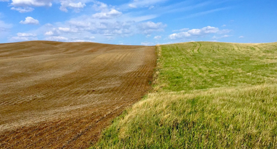
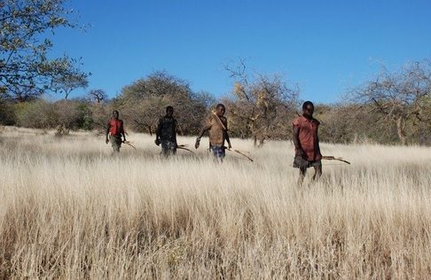
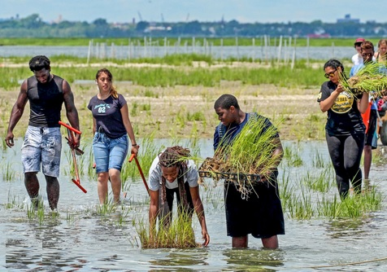
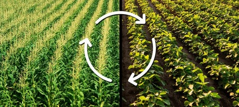

Ways Humans Are Helping vs Hurting Grasslands
There are many ways humans are hurting grasslands
But there are also many ways humans are helping grasslands
Which one will you do?
1st way humans have hurt grasslands

Since the grasslands have rich, moist soil, most of them have been converted into fields for crops or grazing land for cattle.
2nd way humans have hurt grasslands

Humans have been doing a lot of illegal hunting of the animals that live in the grasslands.
1st way humans have helped grasslands

Humans are protecting and restoring wetlands, which are an important part in grassland ecolgy.
2nd way humans have helped grasslands

Humans are also rotating agricultural crops to prevent the sapping of nutrients.